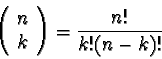

|
Given a set of n distinct items, a k combination of these items is
any subset of the original set with exactly k members (where
0<k<=n). There is a formula for determining exactly how many kcombinations (subsets of size k) exist for a given set of size n:

The notation
is
often read ``the number of n items taken k at a time.''
However sometimes it is not enough to know how many combinations exist
for a given set but rather we are interested in determining what those
combinations are. That is to say, what, exactly, are the subsets of
size k.
|